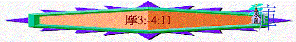

|
神吼叫 |
人回應 |
終結局 |
|
1-6 |
7 |
8-9 |
一.神吼叫(1-6)
1.神向列國吼叫(1-2)
2.神向以色列吼叫(3-6)
～v.3-6主要是向北面以色列國說，當然有時也同南北以色列人整體說的
A.有因必有果的追討(3:1-4:11)
「以色列人哪，你們全家是我從埃及地領上來的，當聽耶和華攻擊你們的話：在地上萬族中，我只認識你們；因此，我必追討你們的一切罪孽。」3:1-2
〜整段說出神必追討選民的罪，為何追討，因有因必有果
a.追討關鍵的原因(3:1-2)
(1)神對選民有恩
〜曾領他們從埃及地出來
(2)神與選民有關
〜在地上萬族中，神只揀選以色列人，與他們立約，神成為他們的神，他們成為神的子民，所以神是「認識」他們的(此認識有一種關係上的認識意思)
(3)以色列卻犯罪
〜「一切罪孽」----以色列人是神所愛，神所認識的，但他們卻犯罪得罪神，主所愛的祂必管教
b.有恩有果的比喻(3:1-8)
〜3:3-8題及很多比喻，目的說明因果的關係，有因為的事情，就有所以的行動及反應，以色列因為犯罪，所以神攻擊，而神攻擊他們，也因為他們各種惡。
|
有 因 |
有 果 |
|
不同心 獅子抓食 少壯獅子有所得 有機檻(陷阱) 網羅有獵物 城中吹角(敵人來) 耶和華降災禍 神將奧秘指示先知 獅子吼叫 神發命令 |
難同行＊ 林中咆哮 從洞中發聲 鳥陷在網羅裏 獵人將網羅從地上翻起 百姓驚恐 禍臨到一城 先知有所行 那個不懼怕 人能說預言 |
＊
3:3可譯「二人若沒有約定，怎會一同走路呢？」在猶大荒僻的山地，路人稀少，若有二人同行，必是預早約定。
〜最後指出神要發出攻擊降災的命令，先知因此可以說出來。
c.因果報應的內容(3:9-4:11)
(1)搶奪
(A)他們的罪行----強暴搶奪財物
「要在亞實突的宮殿中和埃及地的宮殿裡傳揚說：你們要聚集在撒瑪利亞的山上，就看見城中有何等大的擾亂與欺壓的事。那些以強暴搶奪財物、積蓄在自己家中的人不知道行正直的事。這是耶和華說的。」3:9-10
〜亞實突是非利士的城巿(希臘文譯本譯作亞述)，先知邀請埃及與非利士觀看北國的罪行
(B)相對的報應----被人搶掠家園
「所以主耶和華如此說：敵人必來圍攻這地，使你的勢力衰微，搶掠你的家宅。耶和華如此說：「牧人怎樣從獅子口中搶回兩條羊腿或半個耳朵，住撒瑪利亞的以色列人躺臥在床角上或鋪繡花毯的榻上，他們得救也不過如此。」」3:11-12
〜用牧人難從獅子口中搶回羊，即使搶回只剩下殘肢來比喻神要敵人(亞述)攻擊北國，搶掠他們的財物，來報應他們的搶奪罪行。
(2)建壇
(A)他們的罪行----建壇祭祠偶像
「我討以色列罪的日子，也要討伯特利祭壇的罪；壇角必被砍下，墜落於地。」3:14
〜伯特利是北國的敬拜中心，神一早說不可在別的地方建壇，但選民卻不聽，而且更在壇中敬拜偶像(又敬拜神，又敬拜偶像)
(B)相對的報應----拆毀祭壇房屋
「我要拆毀過冬和過夏的房屋。象牙的房屋也必毀滅；高大的房屋都歸無有。這是耶和華說的。」3:15
〜他們建造邱壇，神至終要拆毀，甚至連他們的房屋也被毀掉
(3)欺壓
(A)他們的罪行----欺壓窮乏百姓
「你們住撒瑪利亞山如巴珊母牛的啊，當聽我的話，你們欺負貧寒的，壓碎窮乏的，對家主說：拿酒來，我們喝吧！」4:1
〜巴珊是肥沃之地，以牛隻馳名，用作比喻北國的人富裕卻欺壓其他貧乏人
(B)相對的報應----剩下也被擄去
「主耶和華指著自己的聖潔起誓說：日子快到，人必用鉤子將你們鉤去，用魚鉤將你們餘剩的鉤去。你們各人必從破口直往前行，投入哈門。這是耶和華說的。」4:2-3
〜他們欺壓貧窮的人，最後神會用亞述將他們即使剩下的人也擄去，「哈門」可能是亞述一個地方，「鉤子」----敵人用趕牛上路的方式----鉤子趕逐選民
(4)假祭
(A)他們的罪行----虛假奉獻生活
「以色列人哪，任你們往伯特利去犯罪，到吉甲加增罪過；每日早晨獻上你們的祭物，每三日奉上你們的十分之一。」4:4
〜即使以色列早晚獻祭，每三日奉上十分一，但他們有宗教生活，但沒宗教的行為與生命，不斷犯罪得罪神，他們所獻的也徒然。
(B)相對的報應----至終無物可獻
「我使你們在一切城中牙齒乾淨，在你們各處糧食缺乏，你們仍不歸向我。這是耶和華說的。」4:6
〜他們所獻的是神不喜悅，至終神連他們的食物也奪去，無物可獻給神
(5)硬心
(A)他們的罪行----仍不歸向真神
「這樣，兩三城的人湊到一城去找水，卻喝不足；你們仍不歸向我。這是耶和華說的。我以旱風、霉爛攻擊你們，你們園中許多菜蔬、葡萄樹、無花果樹、橄欖樹都被剪蟲所吃；你們仍不歸向我。這是耶和華說的。我降瘟疫在你們中間，像在埃及一樣；用刀殺戮你們的少年人，使你們的馬匹被擄掠，營中屍首的臭氣撲鼻；你們仍不歸向我。這是耶和華說的。我傾覆你們中間的城邑，如同我從前傾覆所多瑪、蛾摩拉一樣，使你們好像從火中抽出來的一根柴；你們仍不歸向我。這是耶和華說的。」4:8-11
〜強調選民另受到神的刑罰，但他們的心極其剛硬，至終不肯歸向真神
(B)相對的回應----神不斷的攻擊
(a)缺糧
(b)缺水
(c)園毀
(d)被殺
(e)滅城
〜一個攻擊比前一個更嚴厲
〜神至終要傾覆選民像滅所多瑪俄摩拉一樣，只有小數得救，像火中抽出來的一根柴一般